Справочник по Git и GitHub · модуль 4 · GitHub
Глава 4.7
Навигация по репозиторию и поиск
В этой главе разобраны навигация по файлам GitHub, поиск текста, история строки и постоянные ссылки. Пройдём путь от выбора версии до скачивания файлов.
- Категория
- GitHub
- Уровень
- После файлов, коммитов, веток и клонирования
- Что получится
- Найденный файл, проверенная история строки и постоянная ссылка на диапазон
- Сколько занимает
- Около 45 минут; для поиска по коду нужен вход в GitHub
§1Сначала — проект и версия
Зачем этот шаг. Выбрать одну версию проекта, чтобы у всех совпадали файлы и номера строк.
Указатель книги помогает найти страницу в конкретном издании. В репозитории тоже сначала выбирают версию, затем ищут нужное место. Нам прислали имя sendStatus и попросили показать, где эта функция описана. Название файла неизвестно. Искать будем в expressjs/express — публичном проекте Express, библиотеке для веб-серверов. Код здесь читаем как текст; знание JavaScript для этого не требуется.
Откройте репозиторий. В левом верхнем углу expressjs — владелец, в данном случае организация, а express — имя репозитория. Вкладка Code ведёт к файлам. Зелёная кнопка Code открывает меню скачивания.
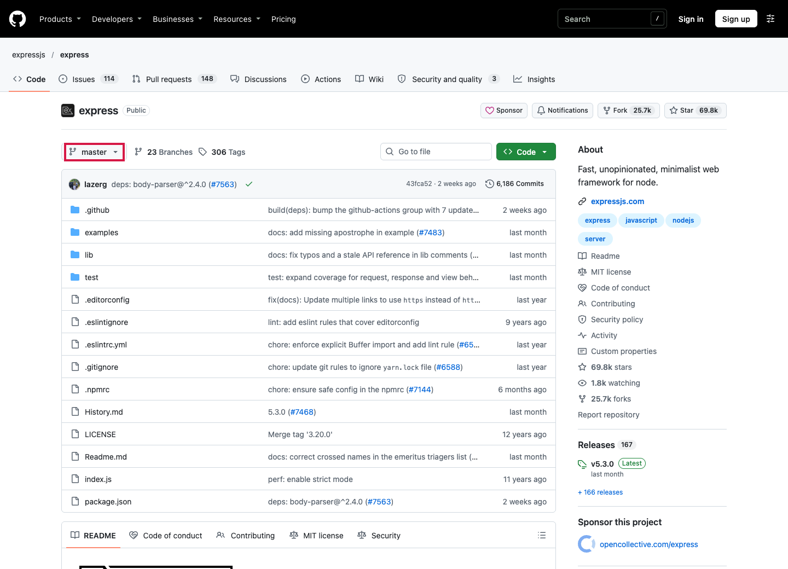
Корень — верхняя папка проекта. Ниже списка GitHub показывает README, то есть вводный текст проекта. По заголовку README можно проверить, что открыт Express.
Для повторяемого примера выберем выпуск v5.1.0. Нажмите переключатель master над файлами, перейдите на вкладку Tags и введите v5.1.0.
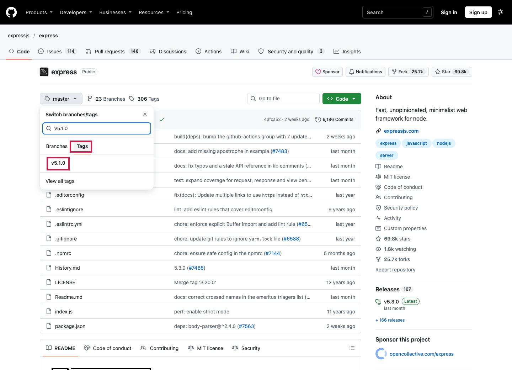
v5.1.0 и нажмите найденную строку v5.1.0. После выбора список закроется, а имя версии над файлами изменится.Тег — именованная отметка коммита, часто выпуска программы. Ветка тоже указывает на коммит, но её указатель обычно перемещается с новыми коммитами. Тег обычно оставляют на месте, хотя технически его можно переставить. Полный хеш закрепляет конкретный коммит независимо от перемещения этих указателей.
Выберите найденный тег. В переключателе теперь должно быть v5.1.0. Все переходы по папкам дальше относятся к выбранной версии.
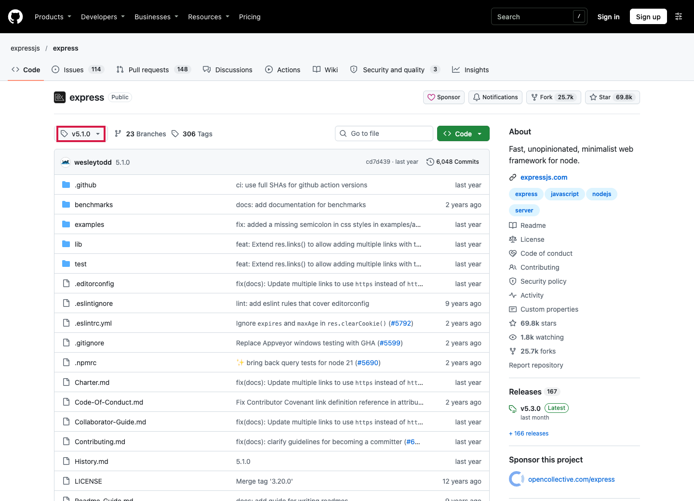
Прокрутите ниже файлов, до README. Содержимое README также относится к выбранной версии.
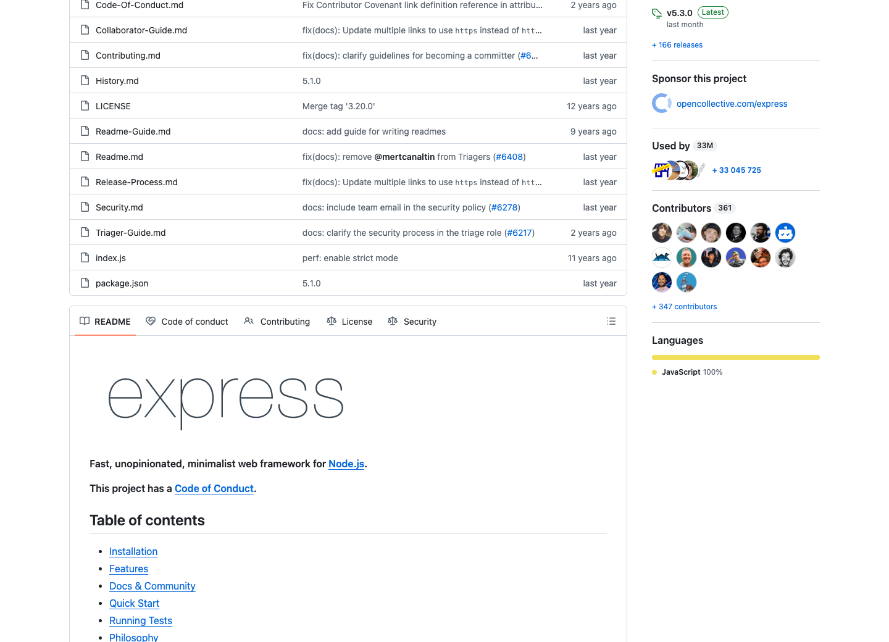
Что получилось.Выбран конкретный проект и выпуск. Теперь можно пройти по папкам этого выпуска.
§2Пройти по папкам и прочитать путь
Зачем этот шаг. Найти файл по папкам и понять его полный адрес внутри проекта.
Путь к файлу похож на адрес: каждый уровень уточняет место. В папке lib лежат основные файлы библиотеки. Откройте её в списке: нам нужен файл, связанный с ответом сервера — response.js.
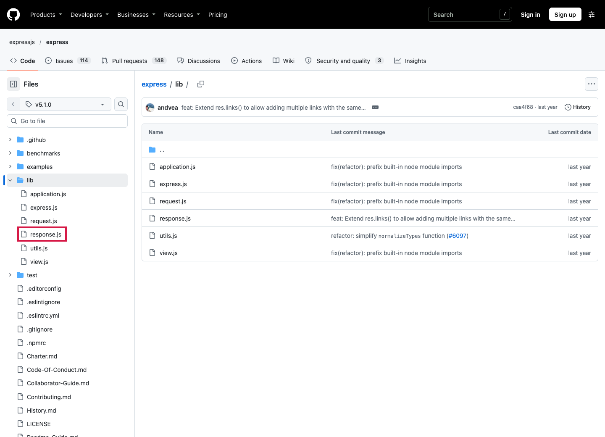
Нажмите response.js. Над содержимым появится путь express / lib / response.js. Это «хлебные крошки»: ссылки на папки, через которые вы пришли. lib вернёт в папку, express в этом пути — в корень выбранной версии. Для возврата с сохранением версии используйте ссылки в этом пути.
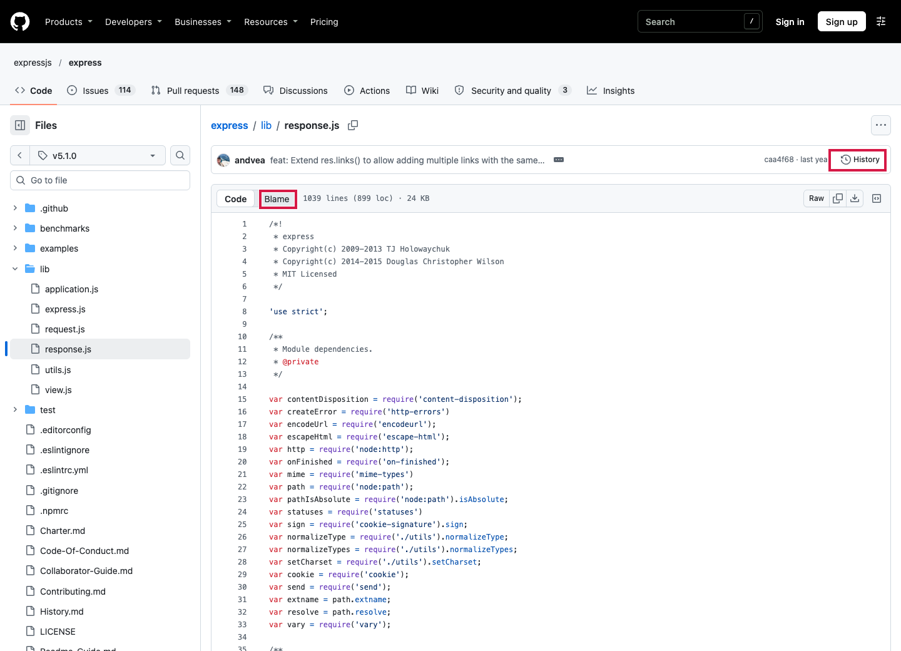
Полный путь внутри репозитория — lib/response.js. Имя файла без папки может быть неоднозначным: в большом проекте одинаковые имена встречаются в разных местах. Попробуем найти этот же путь по имени файла.
§3Если имя файла уже известно
Зачем этот шаг. Открыть уже известный файл, не перебирая папки вручную.
Когда известно название книги, её ищут в каталоге. Для известного имени файла есть Go to file — поиск файла по имени или пути в выбранной версии. Вернитесь в корень через express в пути и введите response.js в поле Go to file.
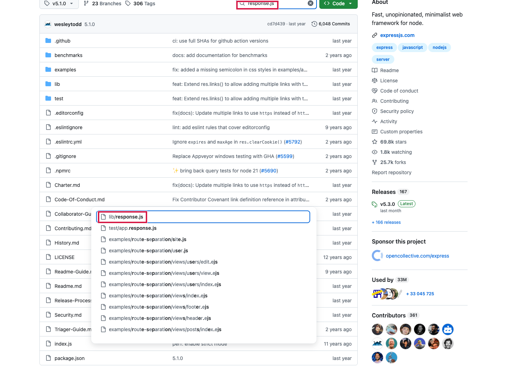
Выберите lib/response.js. Файл откроется без обхода папок. Go to file сопоставляет запрос с путями файлов. Для слова внутри файла нужен поиск по коду.
§4Когда известно слово, но неизвестен файл
Зачем этот шаг. Найти файл по слову внутри него, когда имя файла пока неизвестно.
По названию главы ищут в оглавлении, по цитате — в тексте книги. Теперь вернёмся к исходной задаче: известно только sendStatus. Нужен поиск по коду — поиск текста внутри файлов. Он отличается и от Go to file, и от поиска репозиториев по названию.
Откройте запрос repo:expressjs/express sendStatus. Оператор repo: ограничивает область одним репозиторием. Без него GitHub будет искать по множеству доступных проектов. На странице поиска выберите режим Code для поиска в файлах.
Если результатов много, добавьте известную часть пути. Для нашего файла точнее такой запрос:
repo:expressjs/express path:lib/response.js sendStatuspath: ограничивает пути файлов. Само слово sendStatus остаётся искомым текстом. Откройте уточнённый запрос. Без входа GitHub показал ограничение доступа:
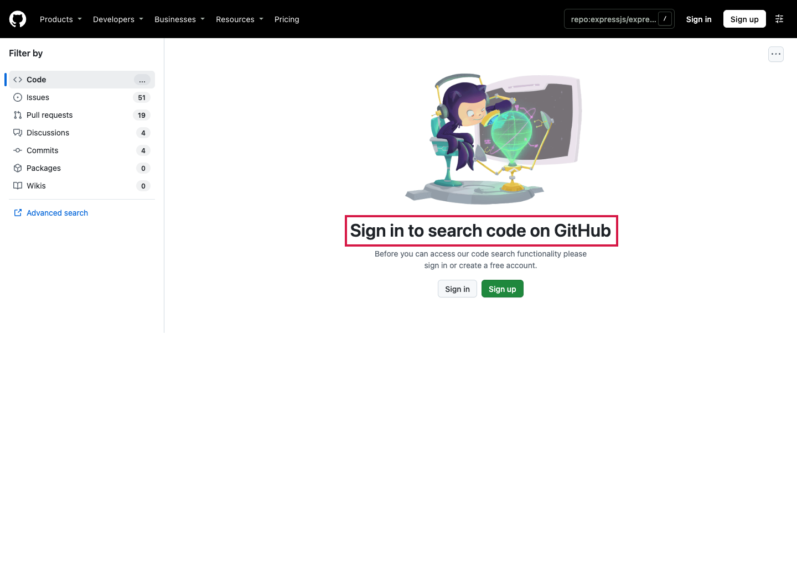
После входа проверьте путь каждого результата, затем откройте подходящий файл. Выдача после входа здесь не проверена; число результатов и их порядок могут меняться.
Выбор тега не переносится в поиск по коду. Поиск GitHub работает по индексу основной ветки репозитория. Выбранные перед поиском ветка или тег не задают его область. Найденное место может относиться к нынешней master. Для продолжения маршрута откройте response.js в v5.1.0; в этой версии наличие текста проверено независимо от поисковой выдачи.
Почему выдача бывает неполной и когда нужен ещё один оператор
Поиск по коду требует входа, индексирует не все файлы и не обновляется мгновенно. В частности, он не предназначен для произвольного поиска по старым тегам, исключает двоичные файлы и файлы больше 350 KiB. Не все репозитории успевают попасть в индекс. Отсутствие результата само по себе не доказывает отсутствие текста.
Если в выдаче мешают файлы других языков, можно добавить language:JavaScript. Для уже известного пути в нашем примере это лишнее.
repo: задаёт репозиторий. path: ограничивает путь, language: — язык. Выбор тега v5.1.0 этими операторами не задаётся.
Обычный текст запроса GitHub может сопоставить и с содержимым, и с путём. Если это мешает, content:sendStatus явно требует искать в содержимом. Для рассматриваемого имени функции достаточно запроса без content:.
Файл нужной версии открыт. Теперь перейдём к строке с найденным именем.
§5Перейти к месту внутри файла
Зачем этот шаг. Открыть нужный фрагмент длинного файла без ручной прокрутки.
Номер страницы помогает открыть место в конкретном издании книги. Так же работает номер строки в выбранной версии файла. В нашем выпуске функция начинается со строки 326. Откройте меню More file actions с тремя точками у имени файла и выберите Jump to line.
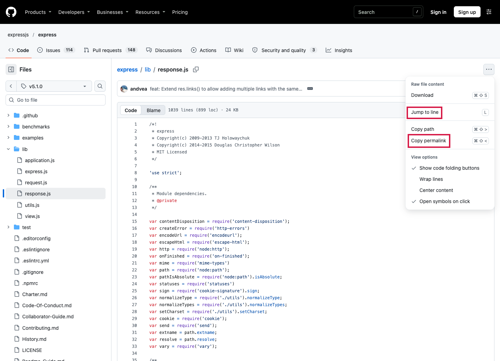
В поле Line number введите 326 и нажмите Enter.
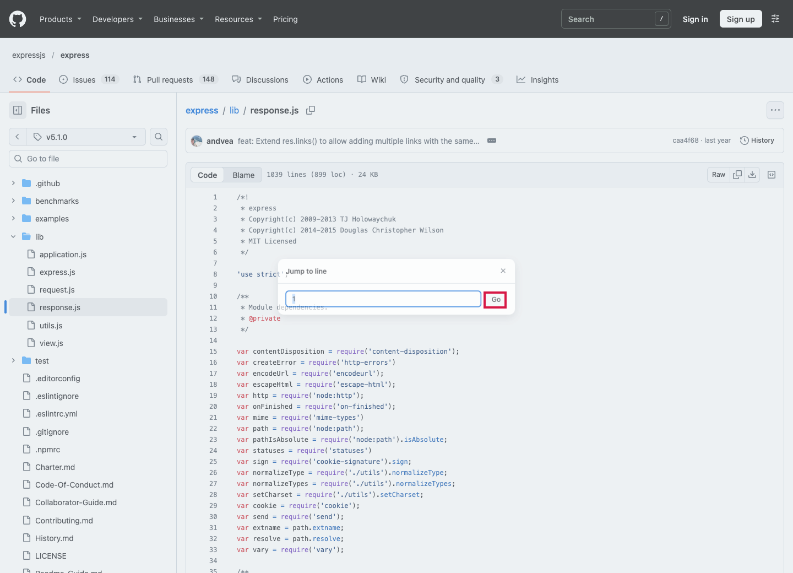
GitHub прокрутит код и подсветит строку. В конце адреса появится #L326. Проверьте текст: res.sendStatus = function sendStatus(statusCode) {.
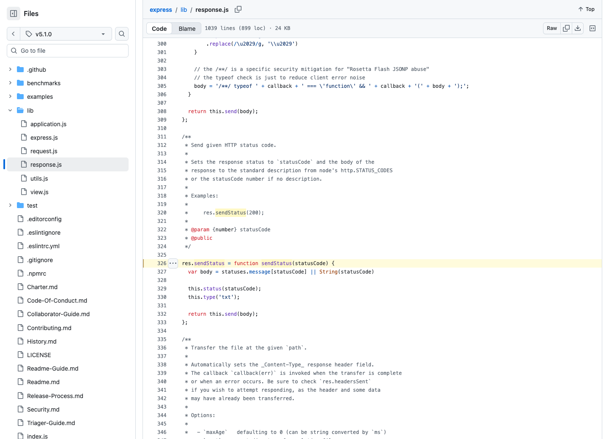
#L326. Ничего менять в файле не нужно.Понимать весь код не нужно. Для нашей задачи достаточно узнать имя функции и соседнюю строку var body = statuses.message[statusCode] || String(statusCode). Теперь найдём коммит, которым меняли эту строку.
§6История файла и последняя правка строки
Зачем этот шаг. Выяснить, какой коммит менял файл целиком, а какой — конкретную строку.
В журнале редактора перечислены правки страницы, на полях отмечены изменения отдельных фраз. В GitHub этим двум задачам соответствуют History и Blame. Откройте ссылку History над кодом; если прокрутили вниз, вернитесь к верхней части файла. История показывает коммиты, затронувшие этот путь в истории выбранной версии.
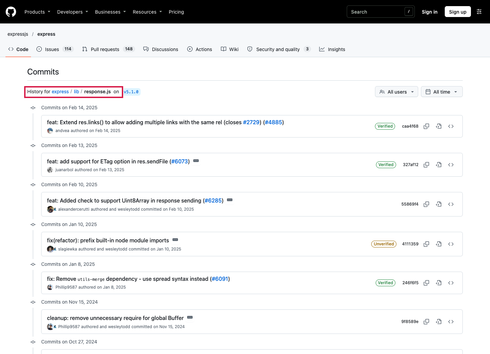
Список помогает найти изменения файла по времени и сообщению. Он не отвечает сразу на вопрос о строке 327. Для строки есть отдельный режим Blame.
Вернитесь к файлу в v5.1.0 и нажмите Blame рядом с Code. Перейдите к строке 327: можно открыть тот же участок сразу в Blame.
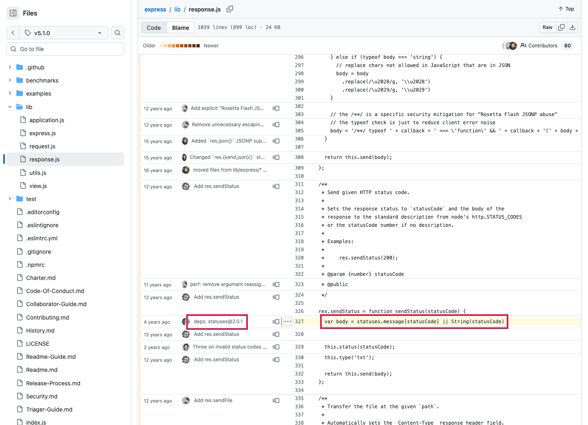
Blame связывает строки выбранной версии с коммитами, которые последними их изменили по расчёту Git. У строки 327 здесь коммит 980d881 от 3 апреля 2022 года с сообщением deps: statuses@2.0.1.
Эти сведения описывают последнюю правку строки. Первоначальное авторство идеи по ним установить нельзя. Строку могли перенести, переформатировать или переписать; правка зависимости могла изменить только способ получения сообщения. В другой ветке или старом теге текст и результат Blame могут отличаться. Сначала проверяйте версию, затем делайте вывод о показанной правке.
По-простому: журнал правок на полях
История файла — список всех визитов редактора к странице. Blame — пометки на полях: «эту строку в последний раз правил такой-то коммит». Пометка не рассказывает, кто первым придумал мысль.
Что есть что: страница — файл; её выпуск — выбранный коммит; запись в журнале — коммит изменения; пометка рядом с предложением — результат Blame.
Выбранную версию и найденный участок теперь нужно закрепить в ссылке.
§7Передать ту же версию и те же строки
Зачем этот шаг. Передать другому человеку проверенную версию строк. Для этого закрепим коммит в ссылке.
Ссылка на последнее издание книги со временем приведёт к новому тексту. Ссылка с номером конкретного издания сохраняет выбранный текст. В GitHub ссылка …/blob/master/lib/response.js означает «этот путь в текущем состоянии ветки master». После новых коммитов по ней может открыться другой текст. Даже добавка #L326 не закрепит версию: подсветится строка с тем же номером в новом файле.
Ветка → версия файла → постоянная ссылка
master
↓ указывает на текущий коммит
↓ показывает файл из этого коммита
Полный хеш коммита
↓ тот же файл в этом снимке
↓ #L326-L333 выделяет диапазон
Ветка может сдвинуться → её файл изменится. Хеш не меняет содержимое коммита → постоянная ссылка сохраняет выбранную версию файла.
Получим ссылку на функцию целиком. В обычном режиме Code файла v5.1.0 нажмите номер 326 в левом поле кода. Для одной строки этого достаточно. Затем удерживайте Shift и нажмите номер 333. Номер строки выбирает участок; стрелка рядом сворачивает код.
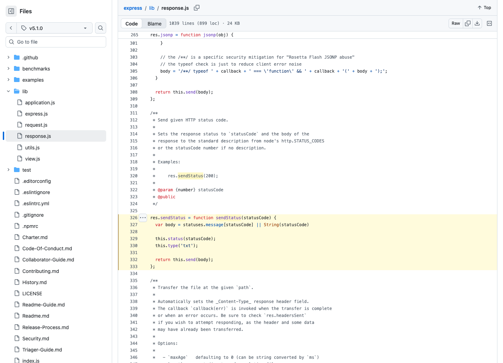
#L326-L333; одна выделенная строка дала бы только #L326.Щёлкните по свободному месту страницы, не по полю ввода, и нажмите латинскую клавишу Y. GitHub заменит имя версии в адресе хешем коммита. Выделение должно сохраниться. Скопируйте адрес из адресной строки. Другой путь — команда Copy permalink в уже показанном меню файла; после копирования проверьте, есть ли в конце нужный диапазон.
В нашем примере получилась постоянная ссылка на строки 326–333:
https://github.com/expressjs/express/blob/cd7d4397c398a3f3ecadeaf9ef6ac1377bd414c4/lib/response.js#L326-L333Откройте её в новой вкладке. Проверьте три вещи: в адресе полный хеш cd7d4397c398a3f3ecadeaf9ef6ac1377bd414c4, файл — lib/response.js, выделены 326–333. Одну строку можно передать с #L327.
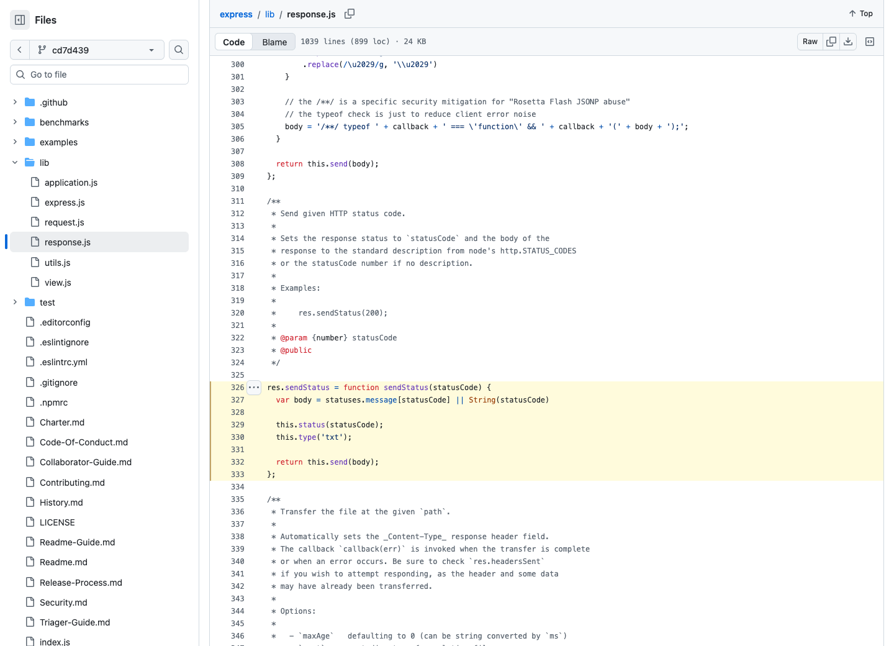
Постоянная ссылка закрепляет содержимое, но не гарантирует вечный доступ: удалённый или закрытый репозиторий может стать недоступен. В обсуждении ошибки по ней можно открыть проверенный текст. Если файлы нужны локально, их можно скачать.
§8Получить один файл или всю версию
Зачем этот шаг. Выбрать, что нужно получить: текст одного файла, снимок проекта или репозиторий с историей.
Фотокопию страницы можно получить без каталога и пометок редактора. Для файла тоже доступны содержимое отдельно и просмотр с окружением. Просмотр GitHub добавляет номера строк, подсветку, History и Blame. Raw открывает исходное содержимое без этой оболочки. Вернитесь в верхнюю часть файла и нажмите Raw; эта ссылка видна на кадре открытия файла в §2.
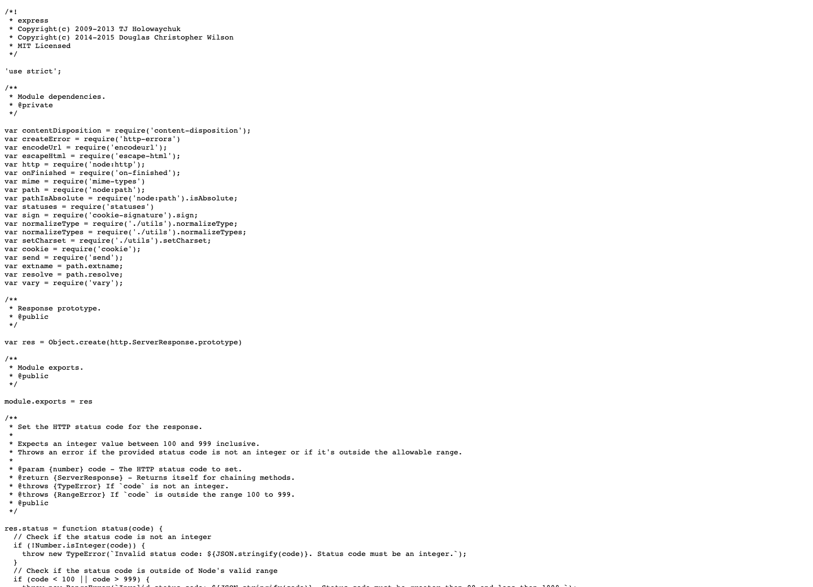
Чтобы получить отдельный файл, вернитесь назад к обычному просмотру и нажмите кнопку со стрелкой вниз Download raw file рядом с Raw. Альтернатива — Download в меню More file actions, показанном в §5. Полученный response.js должен содержать исходный текст файла. Перед скачиванием проверьте версию: для точного снимка используйте постоянную ссылку.
Для всех файлов вернитесь в корень v5.1.0. Нажмите зелёную кнопку Code и выберите Download ZIP.
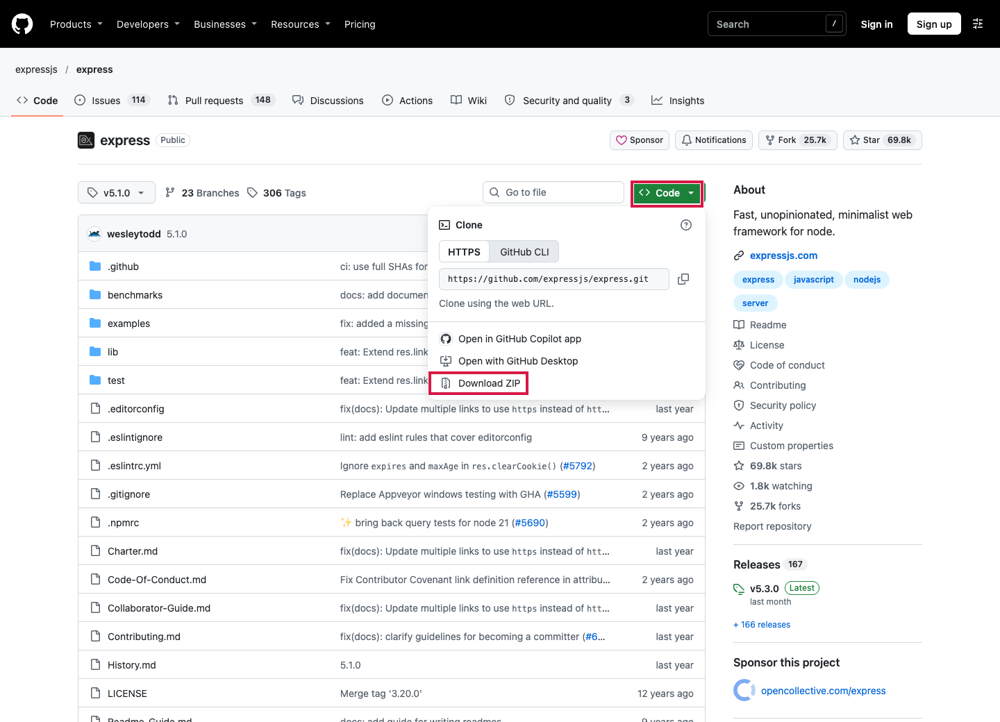
ZIP — архив файлов выбранной версии. В проверенном архиве express-5.1.0 есть lib/response.js и Readme.md, но нет каталога .git. Распаковать его можно в новую пустую папку и посмотреть состав; запускать код для этого не нужно.
git clone создаёт рабочую копию репозитория с каталогом .git, историей и настройкой удалённого репозитория origin. Remote — сохранённое имя и адрес удалённого репозитория для обмена коммитами. ZIP содержит только файлы снимка, без истории коммитов и подключения к удалённому репозиторию. Новые изменения с GitHub в распакованную папку сами не придут.
Почему clone тоже нужно проверять
Обычный clone без специальных ограничений получает историю и настраивает origin, и открывает основную ветку. Выбранный на сайте тег v5.1.0 нужно дополнительно выбрать в клоне. Опции вроде --depth сокращают загружаемую историю. В обоих вариантах клона остаётся каталог .git.
Добавить .git новой командой init к распакованному ZIP можно, но старая история проекта от этого не появится. Получится новый репозиторий со своей историей.
Что получилось.Вы нашли файл и функцию, проверили последнюю правку строки, закрепили диапазон ссылкой и отличили скачивание снимка от клонирования репозитория.
§9Частые ошибки
Файл не находится в Go to file
Введите имя файла или часть пути. Для текста функции нужен поиск по коду. Затем проверьте выбранную ветку или тег: в другой версии файла может не быть.
Поиск просит войти — значит, совпадений нет?
Нет. Поиск ещё не показал выдачу. Даже после входа отсутствие результата может объясняться индексом или областью запроса. Прямой просмотр известного пути — отдельная проверка.
Результат поиска не совпал с файлом на кадре
Поиск по коду относится к основной ветке. Кадры маршрута сняты на v5.1.0. Откройте нужную версию заново; не переносите номера строк между версиями автоматически.
В ссылке есть #L326-L333 — значит, она постоянная?
Нет: это только выделение. Если перед путём стоит master, версия будет меняться вместе с веткой. Закрепите коммит и проверьте полный хеш в адресе.
Blame называет первого автора идеи?
Blame показывает последнюю отнесённую к строке правку в выбранной истории. Первоначальное авторство идеи нужно проверять отдельно.
ZIP — это clone без команд?
ZIP содержит снимок файлов. Clone также получает Git-историю и remote — подключение к удалённому репозиторию.
§10Проверьте себя
Что задают expressjs, express, v5.1.0 и lib/response.js?
Владелец, имя репозитория, выбранная версия через тег и путь файла внутри неё.
Где искать response.js, а где sendStatus?
Имя или путь файла — в Go to file. Текст внутри файлов — в поиске по коду, с repo: для нужного репозитория. Уже известный номер строки — через Jump to line.
Почему новый коммит в master не меняет нашу постоянную ссылку?
В адресе закреплён хеш cd7d4397c398a3f3ecadeaf9ef6ac1377bd414c4. Он задаёт прежний снимок, #L326-L333 — диапазон в нём.
Почему History и Blame могут показывать разные коммиты?
Последняя правка файла могла затронуть другую строку. History перечисляет изменения пути, Blame распределяет последние правки по строкам.
Можно ли по ZIP узнать коммит, который изменил строку?
По одному обычному ZIP с файлами — нет: Git-истории в нём нет. Её смотрят на GitHub или в клоне с нужной историей.
§11Самостоятельная работа
Останьтесь в том же репозитории и на том же теге. Никаких форков, коммитов, issues или публикаций не требуется. Ответы можно сохранить в локальной заметке.
- Откройте
expressjs/express, выберитеv5.1.0и найдите через Go to filelib/request.js. Запишите путь и версию. - Найдите строку с
req.get =. Если доступен поиск по коду, начните сrepo:expressjs/express path:lib/request.js "req.get", затем обязательно вернитесь к v5.1.0. Если поиск требует входа, откройте файл напрямую и найдите текст при чтении начала файла. - Выделите диапазон от строки с
req.get =до следующей строки, где начинаетсяreq.header =, включительно. Получите постоянную ссылку. Проверьте её в новой вкладке: тот же хеш, путь и два выделенных номера. - Посмотрите Blame этого места. Укажите коммит, показанный для одной выбранной строки, и сформулируйте, что вы узнали и чего из этого нельзя заключить.
- Объясните в двух-трёх предложениях, что сохранится при Download ZIP и что дополнительно даст обычный clone. Назовите каталог истории и remote.
Контроль результата — открыть после выполнения
В v5.1.0 req.get = находится на строке 63, req.header = function header(name) { — на 64. Проверочная ссылка на диапазон 63–64 содержит тот же хеш, что и пример с response.js. Для ZIP ожидается ответ «файлы выбранного снимка без .git и origin», для обычного clone — «рабочие файлы, Git-история и настроенный origin».
§12Шпаргалка
Go to fileИщет путь в выбранной версии.
repo:expressjs/express sendStatusПоиск по коду: нужен вход, индексируется основная ветка.
path:lib/response.jsДобавка к поисковому запросу, не выбор версии.
History / BlameИзменения файла / последняя правка каждой строки.
хеш + путь + #L326-L333Номер строки → Shift и второй номер → Y → скопировать адрес.
Download raw file / Download ZIPОдин файл / снимок всех файлов. Git-история доступна на GitHub или в клоне.
Источники и границы проверки
Кадры текущего интерфейса сняты 18 ноября 2026 года в отдельном браузере без входа. Просмотр публичных файлов, выбор тега, Go to file, History, Blame, Raw, выделение строк и клавиша Y проверены. Поиск по коду проверен только до требования войти: авторизованная выдача не снималась. При изменении интерфейса ориентируйтесь также на названия элементов и полный путь.